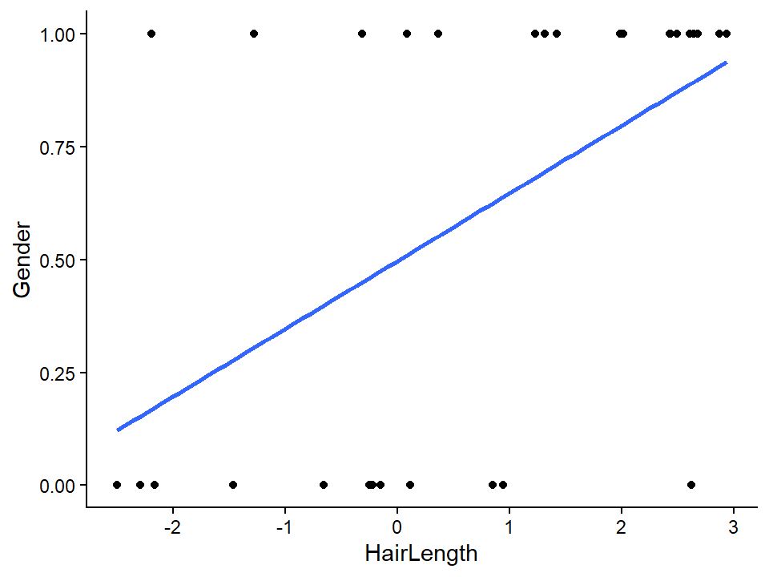
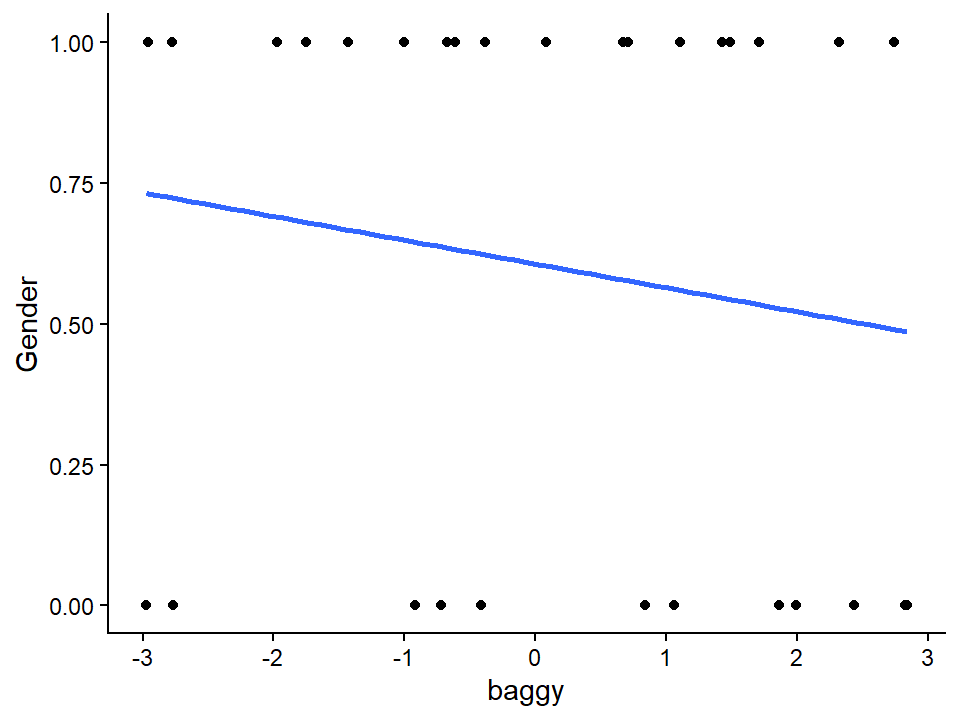

library(ggplot2)
set.seed(42)
n=30
x = runif(n,-3,3) # Hair length centered [-3 short, 3 = long]
j = runif(n,-3,3) # Baggy clothing centered [-3 not baggy, 3 = really baggy]
z = .8*x - .2*j
pr = 1/(1+exp(-z)) # pass through an inv-logit function
y = rbinom(n,1,pr) # response variable
#now feed it to glm:
LogisticStudy1= data.frame(Gender=y,HairLength=x, baggy=j)
ggplot(LogisticStudy1, aes(x=HairLength, y=Gender)) + geom_point() +
stat_smooth(method="lm", formula=y~x, se=FALSE)+
theme_classic()
ggplot(LogisticStudy1, aes(x=baggy, y=Gender)) + geom_point() +
stat_smooth(method="lm", formula=y~x, se=FALSE)+
theme_classic()